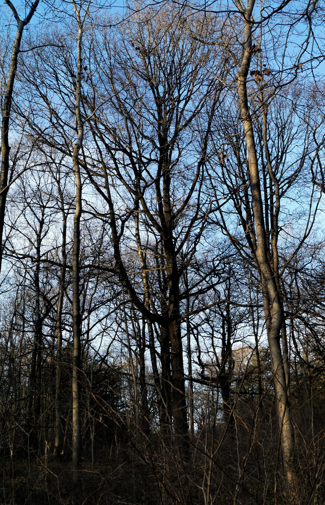
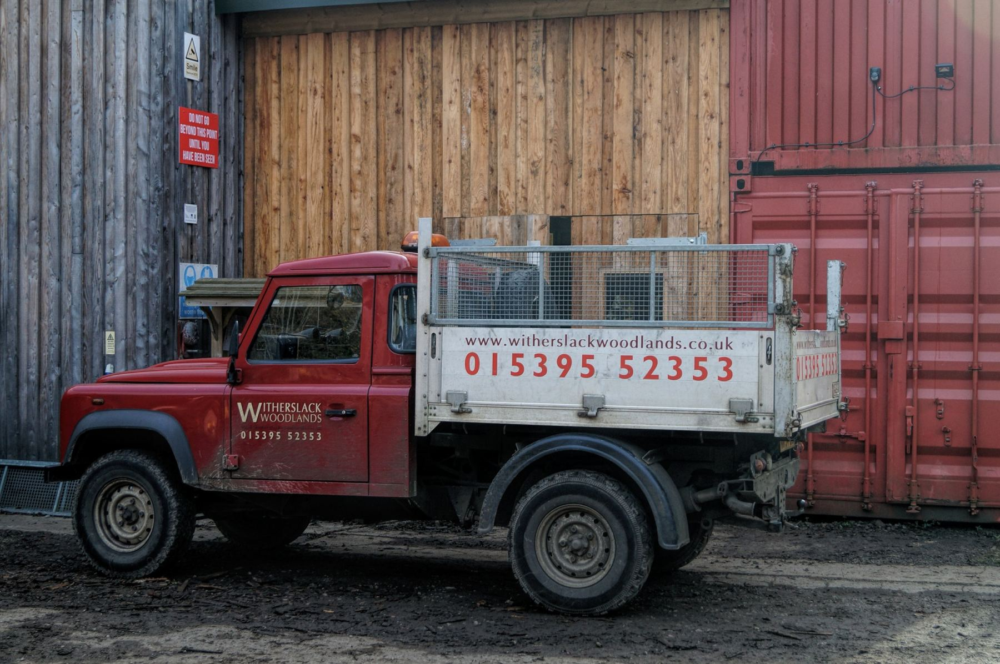
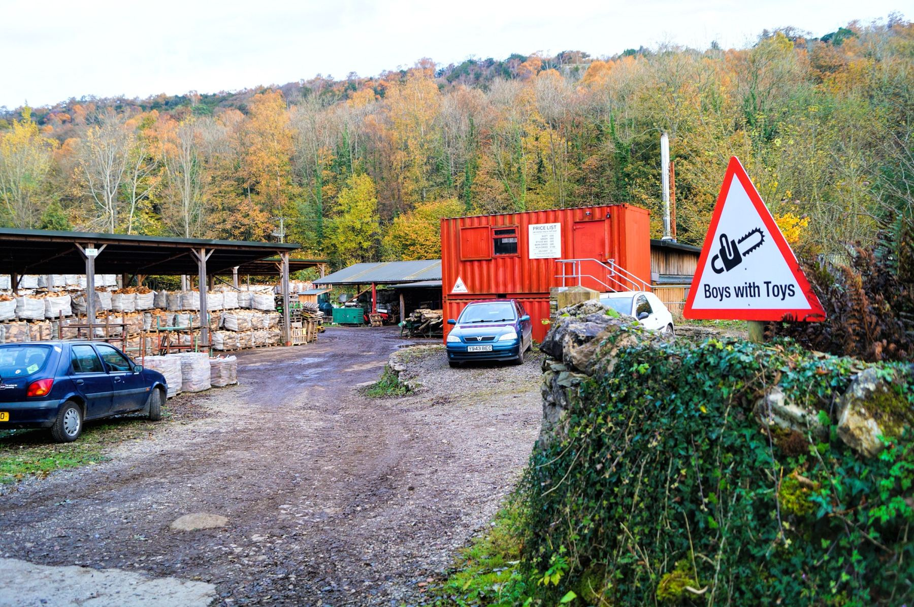

Sustainable firewood for Kendal and the South Lakes
Logs from our own woods, air dried in our own sheds for up to a year, cut to fit your stove and delivered when it suits you.
Dry logs, cut to fit
All our firewood is cut to a standard size, but we're happy to cut logs to order to fit your stove or boiler.
The logs are stacked in sheds we designed for the job and left for up to a year, until the moisture content is down to 20% or less. Dry wood burns more efficiently, which saves you money and is better for the air. Air dried wood has a low carbon footprint too.
We started in 1990 as a small company supplying the estate's tenants with firewood for their homes. These days we're one of the leading suppliers of sustainable firewood in the South Lakes, and we're registered on the Biomass Suppliers List for virgin, naturally seasoned firewood.
But ash logs all smooth and grey,
they're worth their weight in gold.

We deliver across South Cumbria
Delivered loose by our tipping Land Rover pick up and trailer, up to six dumpy bags at a time.
- Witherslack, Meathop and UlphaFree
- Elsewhere in South CumbriaAbout £8 per 15 minute round trip
- Biggest load6 dumpy bags
- Woodyard openMonday to Friday, 8.30am to 4pm
- SaturdaysBy arrangement only
- PaymentCard, BACS or cheque to "Witherslack Woodlands"
Ring for a delivery quote. If you'd like to see what we do, talk through what you need or collect your own logs, come up to the yard during opening hours.
Free delivery in Witherslack, Meathop & Ulpha!
Looking after the woods
We manage 300 hectares of the estate to the standards set by the Forestry Commission and Butterfly Conservation. A large part of it is a Site of Special Scientific Interest, home to some of our most endangered species.
Coppicing
Most of our work is coppicing, an old practice of thinning woodland plots in turn. The light gets to the woodland floor, violets and primroses come up, and the butterflies follow. A few years on we start the plot again, so the wood ends up a patchwork of different ages.
Butterflies
The High Brown Fritillary has gone from 94% of its UK sites in the last 50 years, so its habitat here really matters. Look out too for the Dark Green, Pearl-bordered and Silver-washed Fritillaries, the Dingy Skipper and the Northern Brown Argus.
Red squirrels
In 2016 we teamed up with local red squirrel expert Bob Bradley and the Westmorland Red Squirrel Society to bring reds back to Witherslack, with feeders and nest boxes the greys can't get into. They're already back in Levens, just down the road.
Heating Halecat from our own woods
In 2011 we put the estate's first biomass boiler into the woodyard at Halecat.
The 200kW boiler heats Halecat's homes, the office units and our own operations. It gets through around 200 tonnes of wood a year and runs on faggots, the bundles of branches and twigs left over from our forestry work.
The trees we harvest are coppiced or replanted, and as they grow back they take up almost as much carbon as was released when the wood was burnt. We're always happy to show people round the yard and answer questions about biomass.

Give us a ring
The phone is on answerphone most of the day (we're wearing ear defenders). Leave a message and we'll call you back as soon as we can to sort out the best time for delivery.
- Telephone
- 015395 52353
- sales@witherslackwoodlands.co.uk
- When ordering
- Please give us a daytime or mobile number, the delivery address with postcode, and any special instructions
- The yard
- Witherslack Woodlands, The Yard, Halecat, Witherslack, Grange-over-Sands LA11 6RT
- Haymaking kit
- We share our small scale haymaking equipment at cost with local landowners looking after species rich grassland. Email lydia@witherslackestate.co.uk
Our neighbours at Halecat
The house, the woodyard and the orchards all sit on the same estate, a few minutes' walk apart. More about Witherslack Hall Estate.